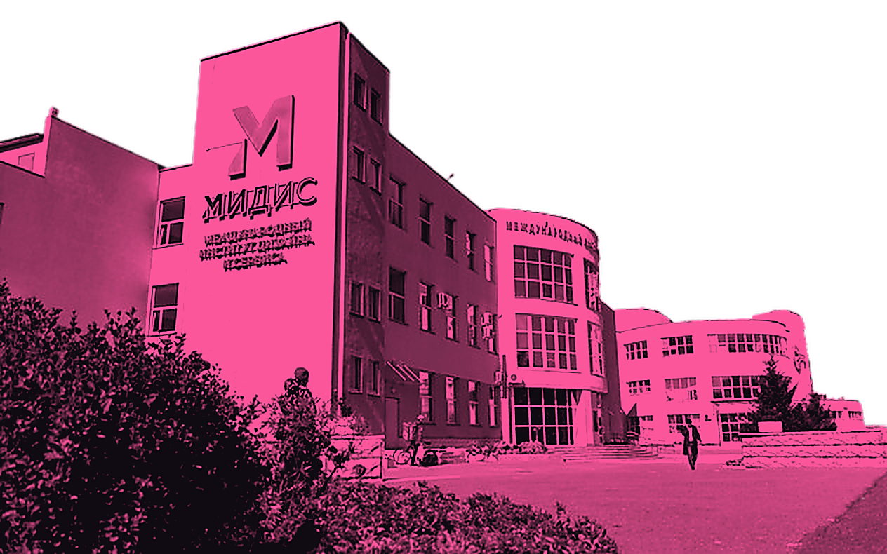

◉A / 01
01 — ИИ В ТВОРЧЕСТВЕ
ПРЕДСТАВЬ
НЕВОЗМОЖНОЕ
Изображения, видео, музыка и новые способы воплощать идеи с помощью нейросетей.

ТЕХНОЛОГИИ УСИЛИВАЮТ ИДЕИ. НО НАЧИНАЮТСЯ ОНИ С ЧЕЛОВЕКА.
Форум о том, как искусственный интеллект меняет творчество, профессии и цифровой мир. Не просто наблюдай за технологиями — учись понимать их и использовать для собственных замыслов.
THINK / CREATE / EXPLORE01 — ИИ В ТВОРЧЕСТВЕ
Изображения, видео, музыка и новые способы воплощать идеи с помощью нейросетей.
02 — ЦИФРОВЫЕ ПРОФЕССИИ
Дизайн, разработка, 3D и другие направления, в которых формируется цифровое завтра.
03 — ЧЕЛОВЕК × ТЕХНОЛОГИИ
Как задавать вопросы, проверять ответы ИИ и сохранять собственный взгляд.
ИИ МОЖЕТ
МНОГОЕ.
НАПРАВЛЕНИЕ
ЗАДАЁШЬ ТЫ.
Технологии — инструмент. Любопытство, воображение и решения остаются за человеком.
Следи за обновлениями: подробная программа и состав участников появятся после подтверждения организаторами.
Присоединяйся к разговору о технологиях, творчестве и профессиях будущего.